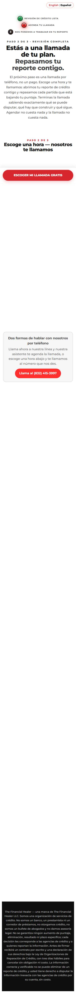
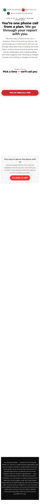
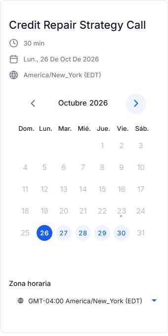
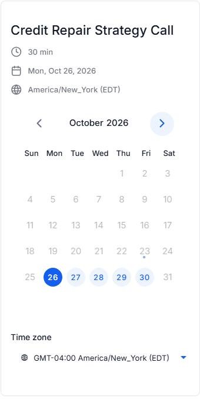

Preview · for review
The whole Spanish journey next to the English one: the pages a Spanish lead sees, and every Spanish text and email your system can send. Read it, mark anything that sounds off, then sign off.
Not live yet. Spanish pages and the Spanish calendar are live. Spanish texts and emails stay off until the switch called es-live is turned on, after a native-speaker review. Until then, Spanish leads get the English texts and emails.
How a Spanish lead moves
Steps 1 to 3 run today. Steps 4 and 5 start the moment es-live is switched on. Nothing about who gets routed where changes; only the language of the messages does.
/es/apply: the 2-minute review in Spanish. The lead picks Puerto Rico, Dominican Republic or neutral Spanish.
/es/apply/booking: the calendar now shows days, months and time zone in Spanish.
The contact gets Preferred Language = Español and their variant (PR, DR or neutral). No messages are sent by this step.
es-live is added to Spanish contacts. A one-question text asks where they are from (1 PR, 2 DR, 3 Mexico, 4 other).
Every text and email below goes out in Spanish, in the lead's variant. English leads see no change.
Pages
Phone-width captures of the live pages, taken 23 October. Scroll inside each frame.
The English toggle on /es/apply goes to /apply, which opens your own credit page (/credit1). The Spanish page is the review-style funnel.


The full-page capture skips the embedded calendar; it is shown on its own below.


Today the calendar is shared with the English page, so its name ("Credit Repair Strategy Call") is still English. Days, months, the date line and the time zone are already Spanish. At go-live it switches to the Spanish calendar, "Llamada de estrategia de crédito".
For the reviewer
Everything with one clear answer has been fixed already. These have two reasonable answers, so both are written out.
The bureau-logins text says we can "send additional disputes directly" through her bureau accounts. The Education lesson says "never online". Same in English.
The neutral Spanish says "cuenta en cobranza". The Puerto Rico and Dominican versions say "colección", which is how many US Spanish speakers say it.
"inquiries", "balances" and "aplicar" appear on purpose in the PR/DR versions.
The PR version says "cualificar"; the DR and neutral versions say "calificar". Both are correct Spanish. Recommended: keep, it is the PR variant's voice.
The Day 1 and Day 4 texts say work is paused until the payment is up to date. The wording is fine in both languages. The question is billing: this only works if each round is charged after it is done.
"Llamada de estrategia de crédito" is a Spanish copy of the booking calendar (same person, hours and rules) that sends people to the new Spanish confirmation page, /es/apply/confirmation. It stays switched off, and takes no bookings, until es-live goes on; then the Spanish booking page swaps to it. The report-access form on that page is still in English.
Already done
Every message
Grouped by where they happen in the journey. Words in curly brackets, like {{contact.first_name}}, fill in automatically. Emails are shown as text; the email footer is shortened.
Sign-off
Send your notes (message number and the change) to the team. Once each row is signed, Eric decides when to switch es-live on.